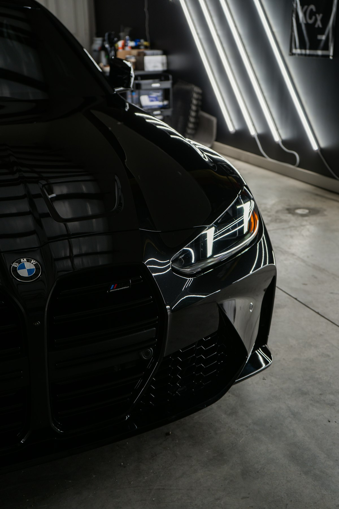

Ключі BMW в Ужгороді — виготовлення, дублікат, програмування

Виготовлення ключів BMW — це робота з блоками EWS (E-серія до 2003), CAS1 / CAS2 / CAS3 / CAS3+ / CAS4 / CAS4+ та новими FEM/BDC (F-серія, G-серія). Маємо обладнання Autel IM608 PRO, Xhorse VVDI BMW Tool та програматори AK90, CGDI BMW. Працюємо з усіма поколіннями від E36 до G80.
Потрібен ключ BMW?
Зателефонуйте — скажемо точну ціну та чи є потрібна заготовка
З якими моделями BMW ми працюємо
- BMW E36 / E39 / E46 / E53 / E60 / E61 / E70 / E71 / E83 / E90
- BMW F01 / F02 / F10 / F11 / F15 / F16 / F20 / F25 / F30 / F45
- BMW G01 / G05 / G11 / G20 / G30 / G80
- BMW X1 / X3 / X4 / X5 / X6 / X7
- BMW M3 / M5 / M Performance
Ціни на ключі BMW в Ужгороді
| Послуга | Ціна | Час |
|---|---|---|
| Дублікат ключа BMW EWS (E36, E39, E46) | від 2000 грн | 1 год |
| Дублікат ключа BMW CAS1-CAS3 (E60, E90, X5 E70) | від 2800 грн | 1–2 год |
| Дублікат ключа BMW CAS4/CAS4+ (F-серія) | від 4500 грн | 1–2 год |
| Smart-ключ BMW FEM/BDC (F-серія 2014+) | від 5500 грн | 2–3 год |
| Smart-ключ BMW G-серія | від 7000 грн | 2–4 год |
| Програмування при повній втраті | від 5000 грн | 2–4 год |
| Заміна корпусу ключа BMW | від 800 грн | 20 хв |
* Точна вартість залежить від моделі, року випуску та комплектації. Уточнюйте по телефону.
Чому Seven Keys для BMW?
- Усі покоління BMW від E36 до G-серії
- Програматори: VVDI BMW, CGDI BMW, AK90+, Autel IM608
- Робота з блоками EWS3/EWS4, CAS1-CAS4+, FEM/BDC
- Корпуси: Diamond key (E60), Slot key (F10), Display key (G30)
- Лезо HU92, HU100R — у наявності
- Можемо виготовити ключ при повній втраті без зняття блоку (на більшості моделей)
Як замовити ключ BMW
- Зателефонуйте і назвіть модель, рік випуску та VIN (бажано)
- Ми перевіримо наявність заготовки і назвемо точну ціну
- Приїжджайте до майстерні (вул. Фединця 39, Ужгород) або викликайте майстра з обладнанням
- Виготовляємо і програмуємо ключ при вас — у середньому за 1–2 години
- Перевіряємо роботу: запуск, центральний замок, кнопки
Часті запитання про ключі BMW
Чи можете зробити ключ для BMW F10 без оригіналу?
Так. Для F-серії з CAS4/CAS4+ потрібно зчитати дані з блоку через OBD або зняти CAS-блок (для CAS4+ HC). Робота займає 2–4 години. Ціна — від 5500 грн.
Скільки коштує ключ для BMW E60?
Diamond-ключ для E60 з блоком CAS2/CAS3 — від 2800 грн з програмуванням. У наявності оригінальні та аналогові корпуси.
Чи робите Display Key для BMW G30 (7-серія)?
Так. Програмування Display Key — від 7000 грн. Це smart-ключ з екраном, складніший в прив'язці.
Чи можна перепрограмувати ключ від іншої BMW?
У деяких випадках так — якщо ключ ще не записаний на інше авто і чіп тієї ж версії. Уточнюйте по телефону.
Скільки ключів максимально можна прив'язати до BMW?
BMW підтримує до 8 ключів одночасно (EWS — 10, CAS — 8, FEM — 8).
Не знайшли свою модель?
Працюємо з усіма BMW — зателефонуйте, підкажемо рішення